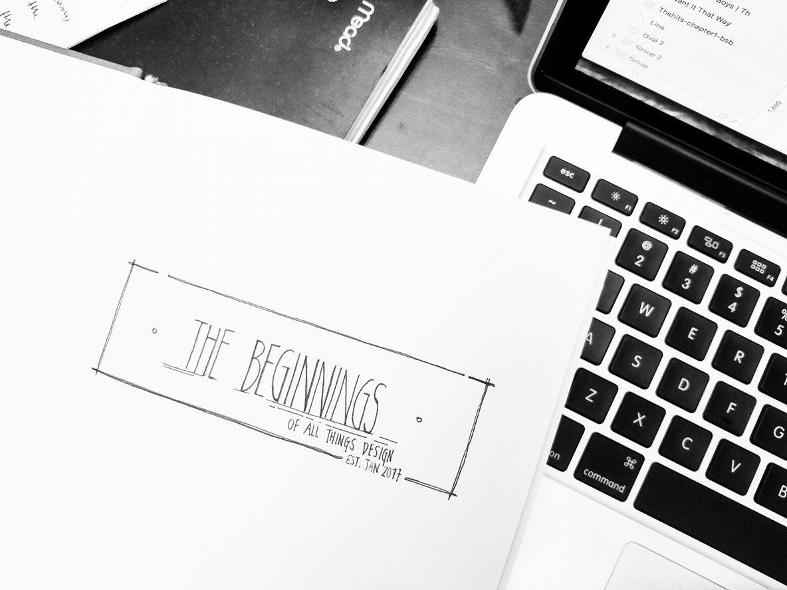

About Me
WELCOME
 Hey everyone! That's me on the left! I'm currently in my fourth year at the UBC Sauder School of Business in the Marketing specialization.Throughout my years in university, I wasn't always happy about the field I was in. I know I didn't make the wrong choice when I picked the Marketing specilization over the other options such as Finance, Accounting, BTM, etc. Actually, I was very much enjoying the program, but it didn't feel like I was giving 100% all the time. Something was missing and I didn't know what it was.
Hey everyone! That's me on the left! I'm currently in my fourth year at the UBC Sauder School of Business in the Marketing specialization.Throughout my years in university, I wasn't always happy about the field I was in. I know I didn't make the wrong choice when I picked the Marketing specilization over the other options such as Finance, Accounting, BTM, etc. Actually, I was very much enjoying the program, but it didn't feel like I was giving 100% all the time. Something was missing and I didn't know what it was.
It was at the beginning of 2016 when a friend introduced the term "User Experience Design" to me. Being an artist, loving to understand how people behave, and driven by constant improvement in all things, I started to submerge myself into all kinds of online articles, random UX blogs, local workshops, and eventually started to look for a place to learn the fundamentals of User Experience.
As I searched more and more about this topic, my interest grew along with it. Everyday I would set aside a couple hours just to read up about it. One of my New Years Resolutions for 2017 was to "Never Hold Back on Things I Love To Do." So at the beginning of the year, I decided to purchase a notebook dedicated to everything that was related to design. This just the was the beginning of a steep learning curve in my journey in UX. In early February, I enrolled into the UX Academy course at Designlab. So far, I'm learning a ton load and excited to see what's in store everyday. I have had the opportunity to meet other UX students and mentors to guide me through.
I'm so glad I've decided to explore this route and I don't regret any bit of it. What I've learned is to always engage in things you want to learn and fully commit to it. Not only that, I constantly tell myself to stay outside my comfort zone. This is how I got to where I am today, but it won't be where I am tomorrow. I can't wait for tomorrow, because I know I will know more than I do today.
Come follow me on my #ADesignADay journey, as I continuously challenge myself everyday and hopefully even inspire you to push yourself.